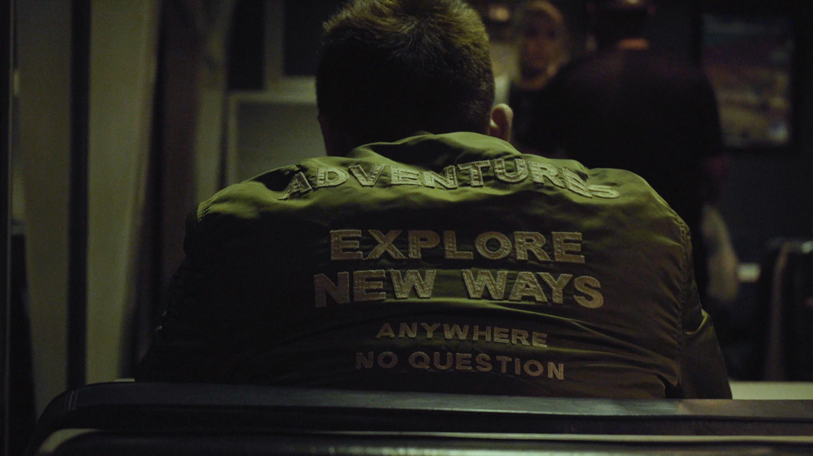

No data plan (DCP, 70min, Color, 2018)
A voiceless narrator rehashes details about his mother’s affair as he crosses America by train. “Mama has two phone numbers. We do not talk about immigration on her Obama phone. For that we use the other number with no data plan.” The linear train ride moving from Los Angeles to New York diverges into unruly directions of consciousness. A multiplicity of voices share thoughts, dreams and histories evoking images far away from the enclosed spaces of this trains interior. While capturing these landscapes and interiors through his lens, the moving images evidently illustrate an undocumented subjectivity, a site of precarious movement, migration and fugitivism in America.
Sheffield Doc/Fest, Art Award Winner 2019
San Diego Asian Film Festival Emerging Filmmaker Award 2019
43rd Gawad Urian Awards for Best Documentary
CNN Philippines: The best Filipino films of 2019
Hyperallergic: Best of 2019
BFI: Sight & Sound: The 50 Best Films of 2019
International Film Festival Rotterdam 2019
Film Society of Lincoln Center, Art of the Real 2019
Flaherty Seminar 2019
Smithsonian National Museum of Asian Art
National Gallery of Art
Criterion Channel
"No Data Plan expands the genre of the train film, integral to cinema since its onset, by using the momentum of travel to address immobility in relation to class position and legal status."
—Minh Nguyen, Art in America, One Work: Miko Reverea’s No Data Plan
"No Data Plan is a story for our times. More importantly, it’s a snapshot of a way of life that’s already become commonplace for untold numbers of people in the U.S. and worldwide. It shines a light on an everyday struggle otherwise left in darkness, one which flashes by as quickly as the changing countryside past the windows of the train." -Vague Visages
“Revereza reimagines the cinematic iconography of the train accordingly, turning away from any association with speed or romance—familiar from the Lumières to Keaton, Hitchcock to Ophüls—to forge a portrait of passenger railways fit for the 21st century. Dwelling in the liminal space between departure and arrival, he recasts the train journey as a durational experience of worn bodies and impersonal”
—Erika Balson Cinema Scope
“It is as though only the mercurial, jagged line can gesture to the constant flux of the filmmaker's existence: his travel, the movement of the non-circumscribed but spatially stifled body. Yet these trajectories, however indirect, provide a line of flight into honesty outside such borders... No Data Plan makes visible the stories and invisible labor of the immigrant, the female, and the female migrant— of being, and becoming migrant. The film configures the figure of the maid or nanny, her reproductive and affective labor made embodied, beyond that of Revereza's own boundedness. Imperfect memories flow over static, scratched and scarred surfaces, and transiently flit across public screens separating the non-place of the train from the space of collective memory." - Ritika Biwas Filmatique
"Revereza made the film with just a few basic tools he wore on his person: a DSLR camera wrapped around his neck, an unassuming pair of earbuds that record sound. The project was born of instinct—in fact, he initially had no intention of making a film out of the footage—and thus was not dependent on any grant or investor. On the train, Revereza lacked access to Wi-Fi or data, so he made diaristic observations with his camera to stave off anxiety and boredom."